Basic reboost post-processing in a python script¶
Simple post-processing of remage simulations can be done in a python script or notebook. This has some limitations but is very useful for simple tasks. For more complicated tasks we have created a config file interface (see the next tutorial). This tutorial builds on the of two germanium detectors in a liquid-argon (LAr) orb with a source. It describes how to run a simple post-processing with reboost tools, and explains the usual steps.
For this example we simulate \(^{228}\)Th in the source. We use the following
macro file (saved as th228.mac):
/RMG/Geometry/RegisterDetector Germanium BEGe 001
/RMG/Geometry/RegisterDetector Germanium Coax 002
/RMG/Geometry/RegisterDetector Scintillator LAr 003
/run/initialize
/RMG/Output/Germanium/DiscardPhotonsIfNoGermaniumEdep true
/RMG/Processes/Stepping/ResetInitialDecayTime true
/RMG/Generator/Confine Volume
/RMG/Generator/Confinement/SampleOnSurface false
/RMG/Generator/Confinement/Physical/AddVolume Source
# generator
/RMG/Generator/Select GPS
/gps/particle ion
/gps/energy 0 eV
/gps/ion 88 224 # 224-Ra
/process/had/rdm/nucleusLimits 208 224 81 88
/run/beamOn 1000000
And run the remage (from inside the remage container / after installation — see instructions) simulation with:
$ remage --threads 1 --gdml-files geometry.gdml --output-file stp_out.lh5 -- th228.mac
This should take about 10 minutes to run.
We should now have a remage output file to use for our post-processing!
Setup the environment¶
from lgdo import lh5
from lgdo.types import Table, Array, VectorOfVectors
import numpy as np
from pygeomtools.detectors import get_sensvol_metadata
from pygeomhpges import make_hpge, draw
import pygeomhpges
import pyg4ometry
import awkward as ak
from reboost.math.stats import gaussian_sample
import hist
import matplotlib.pyplot as plt
import matplotlib.colors as mcolors
import reboost
from reboost import hpge
from reboost.hpge import surface, psd
from reboost.shape import group
from reboost.math import functions
plt.rcParams.update({"font.size": 12})
Extract useful objects¶
Additional information is needed (for example details of the detector geometry) to perform our post-processing. Fortunately for us integration with the detector geometry GDML file makes this easy! Similarly to how was used to write the detector geometry GDML file it can also be used to read this back into python. This GDML file can also contain additional metadata useful for us, which can be extracted using the package.
This metadata can be used to create a python object describing the HPGe detectors using the package. Among other things, the HPGe object from this package has methods to compute detector properties (mass, surface area etc.) and to compute the distance of points from the detector surface.
In this example we extract the pyg4ometry.geant4.Registry object
describing the geometry, the legend-pygeom-hpges
pygeomhpges.base.HPGe python object and finally we extract the
position of the BEGe detector (which we focus on for this analysis).
reg = pyg4ometry.gdml.Reader("geometry.gdml").getRegistry()
hpge_pyobj = make_hpge(get_sensvol_metadata(reg, "BEGe"), registry=None)
position = reg.physicalVolumeDict["BEGe"].position.eval()
Read the data¶
Next we can read the data using the package.
Warning
If the simulations files are large this approach can cause memory issues, in that case it is possible to iterate over the files instead using the GLMIterator (see the next tutorial).
We use the package to view the data, ideal for working with data with a "jagged" structure, i.e. many vectors of different lengths.
stp = lh5.read_as("stp/det001", "stp_out.lh5", "ak", with_units=True)
Processors¶
Note
If the remage flat output file is used an additional step of "step-grouping" is required.
Now we can compute some quantities based on our simulation. This is based on "processors" (see the User manual for more details). This is just any (generic) python function computing a new (post-processed) quantity (i.e. a new row of the output table).
The only requirements are:
the function should return an
awkward.Arrayobject,the returned object should have the same length as the original stp table, i.e. the processors act on every row but they cannot add, remove or merge rows.
More details (how to deal with physical units etc.) can be found in the manual.
Active energy¶
One of the main steps in the post-processing of HPGe simulations consists of correction for the inactive regions at the surface of the detector.
A common heuristic approach consists of computing the distance of each energy deposition from the detector surface and then weighting the deposited energy by an "activeness" function. One complication of this approach is that the various surfaces (electrodes) of a Germanium detector do not have the same thickness of inactive (commonly called "dead" layer).
reboost contains a function to compute the distance of points to the surface
( reboost.hpge.surface.distance_to_surface()) of the HPGe detector.
dist_all = reboost.hpge.surface.distance_to_surface(
stp.xloc, stp.yloc, stp.zloc, hpge_pyobj, position
)
dist_nplus = reboost.hpge.surface.distance_to_surface(
stp.xloc,
stp.yloc,
stp.zloc,
hpge_pyobj,
position,
surface_type="nplus",
)
Tip
This code block demonstrates the unit handling in remage. The fields of
the stp table carry their units along with them as an awkward-array parameter;
xloc/yloc/zloc have units of meter. distance_to_surface handles the
units transparently and converts to mm internally. For the manual calculation,
we also need to track the units along our mathematical expressions.
We make a plot of the distance of the steps to the n+ electrode compared to the r,z coordinates.
# extract r and z
r = ak.flatten(
np.sqrt((stp.xloc * 1000 - position[0]) ** 2 + (stp.yloc * 1000 - position[1]) ** 2)
)
z = ak.flatten(stp.zloc * 1000 - position[2])
rng = np.random.default_rng()
r = rng.choice([-1, 1], p=[0.5, 0.5], size=len(r)) * r
# make the plot
fig, ax = plt.subplots(figsize=(8, 4))
pygeomhpges.draw.plot_profile(hpge_pyobj, axes=ax, split_by_type=True)
cut = ak.flatten(dist_nplus) < 2
s = ax.scatter(
r[cut],
z[cut],
c=ak.flatten(dist_nplus)[cut],
marker=".",
cmap="BuPu",
)
c = plt.colorbar(s)
# configure the plot
ax.axis("equal")
c.set_label("Distance [mm]")
_ = ax.set_xlabel("radius [mm]")
_ = ax.set_ylabel("height [mm]")
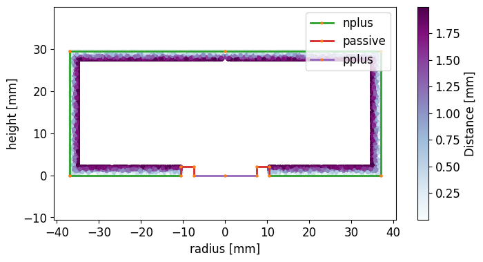
We can compute for every step the "activeness" or the charge collection efficiency based on a simple piecewise linear model. This function is:
where:
f: is the full-charge-collection depth (FCCD),
l: is the fraction fully dead
We first plot this function for nominal values of \(f = 1\) mm and \(l = 0.2\).
fig, ax = plt.subplots(figsize=(8, 4))
ax.plot(
np.linspace(0, 2, 1000),
reboost.math.functions.piecewise_linear_activeness(
np.linspace(0, 2, 1000), fccd_in_mm=1, dlf=0.2
),
)
ax.set_xlabel("Distance to n-plus surface [mm]")
ax.set_ylabel("Charge collection efficiency ")
_ = ax.set_xlim(0, 2)
_ = ax.set_ylim(0, 1.1)
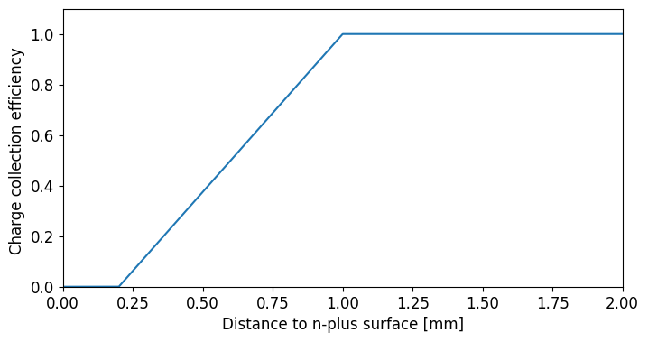
Finally, we compute the activeness for every step and extract the activeness corrected energies, summing over the steps.
We then plot the energy spectra:
activeness = reboost.math.functions.piecewise_linear_activeness(
dist_all, fccd_in_mm=1, dlf=0.4
)
# compute the energy
total_energy = ak.sum(stp.edep, axis=-1)
corr_energy = ak.sum(stp.edep * activeness, axis=-1)
# make a plot
def _make_plot(total, corr, xrange, bins, scale="log"):
fig, ax = plt.subplots(figsize=(12, 4))
h_total = hist.new.Reg(bins, *xrange, name="energy [keV]").Double().fill(total)
h_corr = hist.new.Reg(bins, *xrange, name="energy [keV]").Double().fill(corr)
ax.set_title("$^{228}$-Th simulation")
h_total.plot(yerr=False, fill=True, alpha=0.5, label="Total energy")
h_corr.plot(yerr=False, alpha=1, label="Activeness corrected energy")
ax.set_xlim(*xrange)
ax.legend()
ax.set_yscale(scale)
_make_plot(total_energy, corr_energy, xrange=(0, 3500), bins=350)
_make_plot(total_energy, corr_energy, xrange=(2615 - 100, 2615 + 50), bins=50)
_make_plot(total_energy, corr_energy, xrange=(0, 200), bins=100)
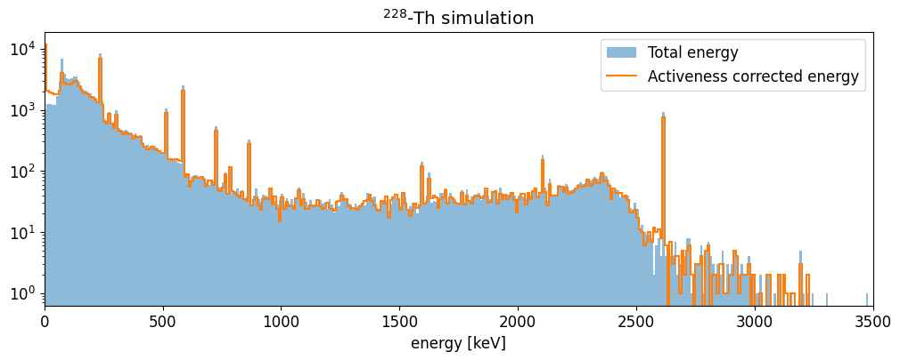
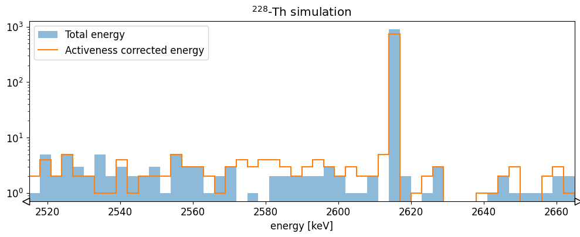
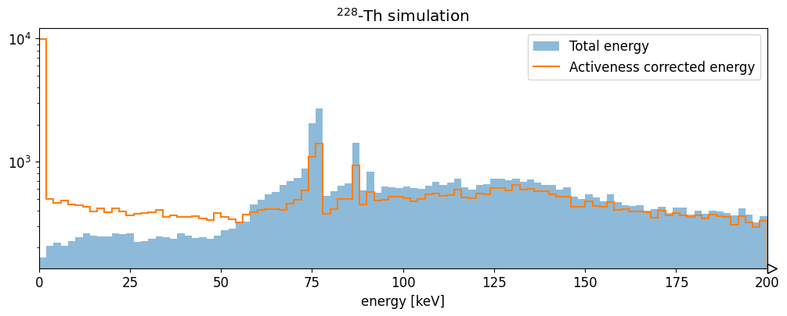
The HPGe activeness correction shifts events out of the 2615 keV full energy peak into the continuum. It also increases the number of hits with very low energy (due to interactions in the dead-layer).
Energy resolution smearing¶
The remage simulations do not include the effect of the energy resolution. To
do this there is the reboost processor math.stats.gaussian_sample()
to sample from a Gaussian distribution.
We demonstrate this with a sigma of 0.5 keV.
energy_smeared = reboost.math.stats.gaussian_sample(corr_energy, sigma=0.5)
fig, ax = plt.subplots(figsize=(12, 4))
h_smear = (
hist.new.Reg(200, 2615 - 50, 2615 + 50, name="energy [keV]")
.Double()
.fill(energy_smeared)
)
ax.set_title("$^{228}$-Th simulation")
h_smear.plot(yerr=False, fill=True, alpha=0.5, label="Total energy")
ax.set_xlim(2615 - 50, 2615 + 50)
ax.set_yscale("log")
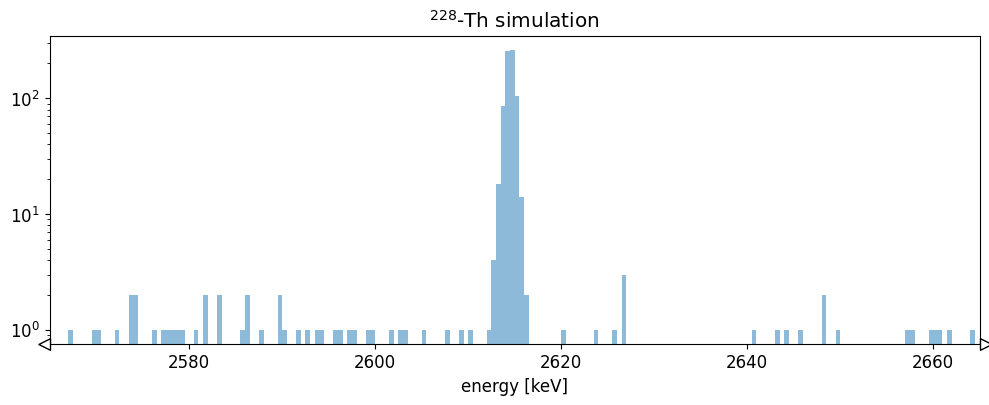
This introduces a Gaussian spread to the energy spectrum.
PSD heuristics - r90¶
Another area of HPGe post-processing involves the calculation of PSD heuristics. These are quantities which help estimate if an event would have a single or multi-site event topology.
One simple example is the r90, or the radius of a sphere (centered on the
event energy weighted center of mass), containing at-least 90% of the energy.
This can be computed with a simple reboost processor: hpge.psd.r90().
r90 = reboost.hpge.psd.r90(stp.edep, stp.xloc, stp.yloc, stp.zloc)
# make a plot
fig, ax = plt.subplots(figsize=(8, 4))
_, _, _, im = ax.hist2d(
energy_smeared.to_numpy(),
r90.to_numpy(),
bins=100,
range=[(0, 3000), (0.1, 5)],
cmap="BuPu",
norm=mcolors.LogNorm(),
)
cbar = plt.colorbar(im, label="Counts")
_ = ax.set_xlabel("energy [keV]")
_ = ax.set_ylabel("r90 [mm]")
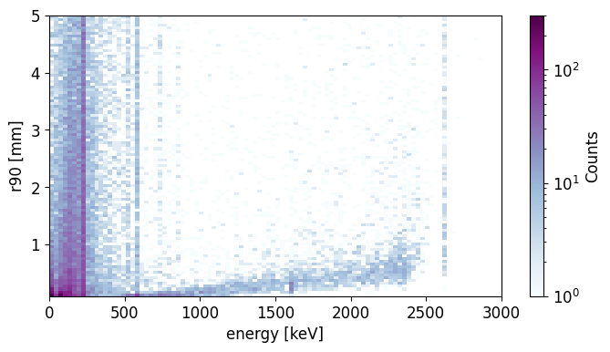
The average r90 generally increases through the energy spectra, as we expect.
Cutting on events with r90 < 2 mm we can obtain a rough estimate of the
spectrum after the PSD cut.
def _make_plot(energy, cut, xrange, bins, scale="log"):
fig, ax = plt.subplots(figsize=(12, 4))
h_total = hist.new.Reg(bins, *xrange, name="energy [keV]").Double().fill(energy)
h_sse = hist.new.Reg(bins, *xrange, name="energy [keV]").Double().fill(energy[cut])
ax.set_title("$^{228}$-Th simulation")
h_total.plot(yerr=False, fill=True, alpha=0.5, label="All events")
h_sse.plot(yerr=False, alpha=1, label="r90 < 2 mm (SSE)")
ax.set_xlim(*xrange)
ax.legend()
ax.set_yscale(scale)
_make_plot(energy_smeared, r90 < 2, xrange=(0, 3500), bins=350)
_make_plot(
energy_smeared, r90 < 2, xrange=(2615 - 50, 2615 + 50), bins=100, scale="linear"
)
_make_plot(
energy_smeared, r90 < 2, xrange=(1590 - 50, 1590 + 50), bins=100, scale="linear"
)
_make_plot(
energy_smeared, r90 < 2, xrange=(2104 - 50, 2104 + 50), bins=100, scale="linear"
)
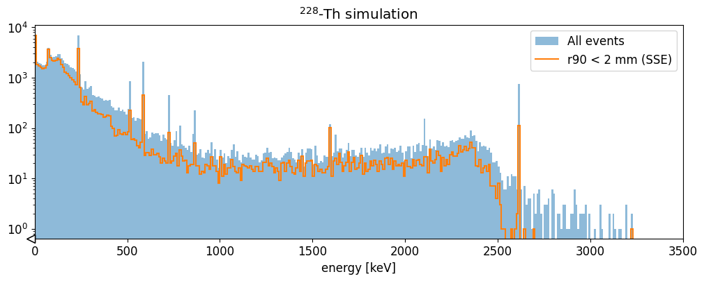
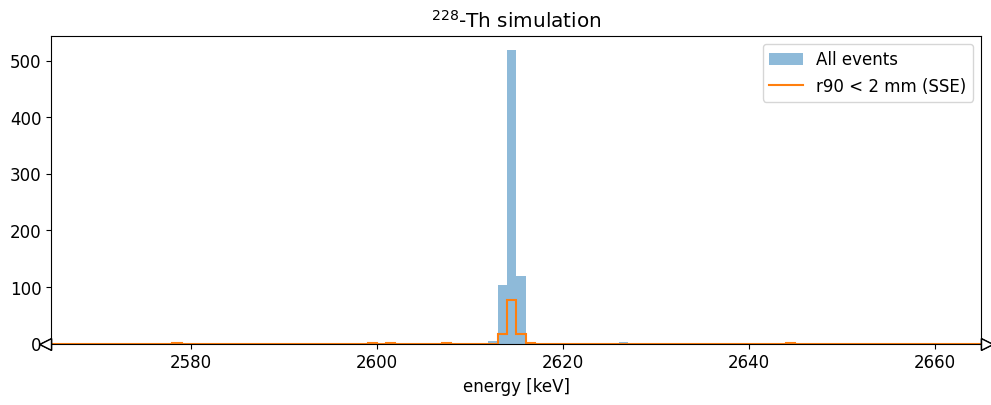
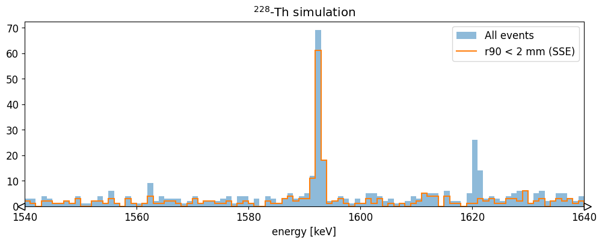
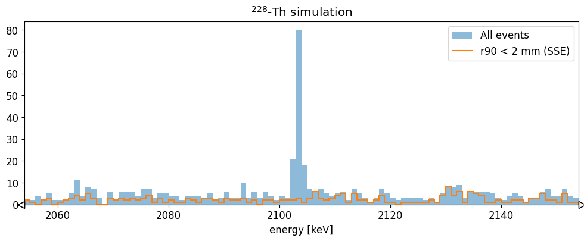
We see that this basic cut removes most of the 2615 keV events, and the events in the 2104 keV single escape peak, while keeping the 1588 keV double escape peak almost unaffected. This is what we would expect. More sophisticated heuristics are able to reproduce better the features of experimental data!
Saving to disk¶
We can save the data to disk by appending the fields to the hit table.
stp_tbl = Table(stp)
# add fields
stp_tbl.add_field("energy", Array(energy_smeared))
stp_tbl.add_field("r90", Array(r90))
stp_tbl.add_field("evtid", Array(ak.to_numpy(stp.evtid)))
stp_tbl.add_field("t0", Array(ak.fill_none(ak.firsts(stp.time), np.nan)))
for field in ["particle", "edep", "time", "xloc", "yloc", "zloc", "dist_to_surf"]:
stp_tbl.remove_field(field)
lh5.write(stp_tbl, "hit/det001", "hit_out.lh5")
Now we have a hit tier file for further analysis!